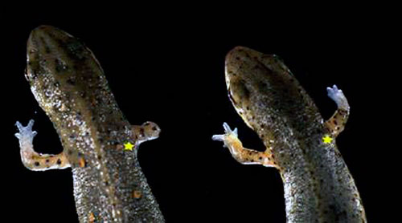

Биомедицинская Инженерия
Небольшое Отступление
Представьте себе на минуту, что инвалидов на Земле больше не существует. Любую конечность можно заменить словно перчатки или отрастить новую, как, например, саламандра. Понятия генных болезней больше не нет, ведь все дефектные геномы можно отредактировать так же легко как документ в Word-е.

Многие органы были модифицированны или заменены на искуственные, более продвинутые. Голод в прошлом, так как были выведены продукты, устойчивые к непогоде, болезням с повышенной пищевой ценностью. Подход к лечению болезней также изменился и теперь заболевание это редкое явление в нашем мире.
Слияние нервной системы человека и электронных вычислительный устройств открыло новый способ загрузки и обработки информации. Виртуальная реальность и загрузка человеческого сознания в сеть - давно стала частью жизни населения планеты.
Вымысел? Или...
Звучит как научная фантастика, не так ли?И все же, наука стремительно набирает обороты, многое из того что мы сейчас имеем звучала как фантастика более 30ти лет назад, как интернет, портативные компьютеры, смартфоны и многое другое. Воплощением сценария выше занимается молодая наука Био-Мед-Инжернерия, это лишь одни из немногих передовых задач, которые с высокой вероятностью будут решены в ближайшее десятилетия. Мы не ждем, пока другие решат те самые задачи, мы сами творим будущее и если ты разделяешь это мнение, то Био-Мед-Инжернерия это твой выбор. see more